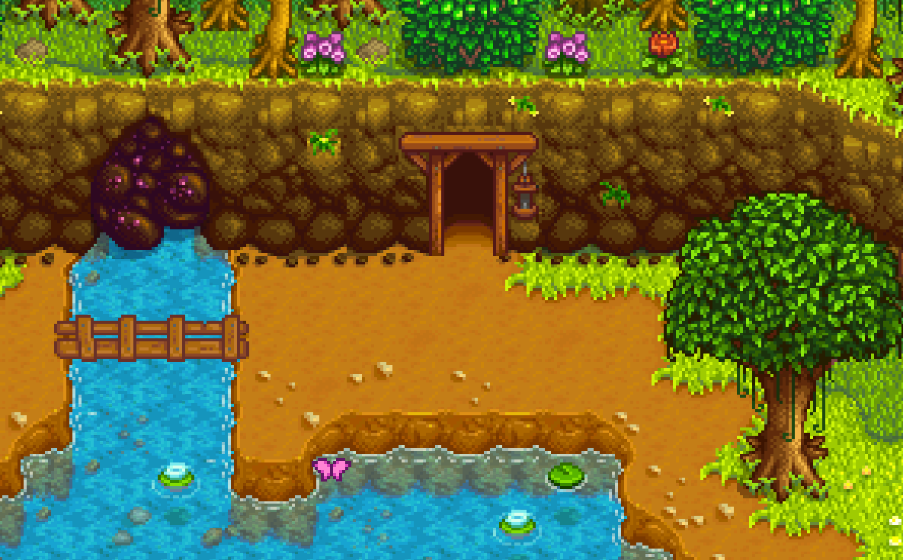

| Mines | |
 | |
The MinesThe Mines can be found to the North-East of the Carpenter's Shop and West of the Adventurer's Guild. They can be accessed only after you receive a letter on the fifth day of gameplay, as they are blocked off by rocks before this. The Mines are filled with rocks and dirt patches. Be sure to mine the rocks with your pickaxe for a chance at stone, ore and geodes, and use your hoe on the patches of dirt/sand for a chance at minerals, ore, clay, cave carrot, and potentially more! To advance to a deeper level of the mine, you must find a ladder. A ladder will sometimes appear when rocks are broken or enemies are killed. If a level is infested or overrun, you must defeat all monsters on that floor before a ladder will appear, under the final monster. If The Player has reached at least level 2 in the Mining skill, levels can be skipped by using a Staircase, which costs 99 Stone to craft. After Level 5 You gain access to the Elevator, and it will record each 5 levels down, allowing you to quickly descend later on. It has a Minecart on the entry floor for quick travel to and from the mine, unlocked by completing the Community Center boiler room bundles. Combat in the MinesYou will face many Monsters in the mines. Be prepared. Make sure to bring lots of food that refill HP and energy or craft life elixirs which refill all health when used. Losing all your health in the mines is not ideal. You will lose money, items from your inventory and you will "forget" previous levels you've discovered. The amounts of items, gold and knowledge lost vary. You will either awake in the mine entrance, or in the hospital. Hospital will charge 50g for services. If the screen becomes "Misty" or "Glowy" be prepared to fight. When this happens lots of the current biomes flying monster will spawn and attack you. Skull keyOn level 120 of the mines is the Skull Key. The skull key is used to open a door in a cave in The Desert, leading to the Skull Cavern. It is also used to unlock the Junimo Kart arcade machine for play in The Saloon. | |